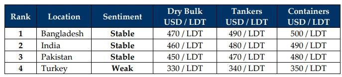

inWeekly Demolition Reports25/11/2024

As tensions escalate across the warring landscapes, economies continue to react in kind as volatility seems to have largely resumed acrossthe global maritime landscape, with both crude oil and the Baltic Exchange maintaining new directions from last week. As barrel futures climbed 1.6% to $71.2 by close of Friday (marking an over 5% increase overall), it further added a layer of geopolitical ‘risk premium’ to oil prices. Moreover, on the one hand, as the Russia – Ukraine conflict rages on and the U.S. imposes further sanctions on Gazprombank as well as banning imports / trade with over 30 Chinese companies accused of exploiting labor, on the other hand, China’s unveiling of new policy measures intended to boost global trade in the face of incoming President-Trump’s looming tariffs has seen the U.S. Dollar continue to firm across major recycling destinations, including against the Chinese Yuan that itself recorded a 20 basis point shift down to a record-breaking CNY 7.24. Simultaneously, the Baltic Exchange’s main sea freight index tracking bulk commodities continued to ease for the 4th running week on Friday, slipping about 2.5% to a 2-week low, thanks to unfolding pressures from all vessel segments. Local steel prices too registered declines with imported steel in Turkey falling the most, China and Pakistani plate levels twinning in tango and declining roughly the same, India recording marginal moves of its own, and Bangladeshi plate levels resuming their horizontal activity i.e. dead on the ocean floor again.
As global ship recycling markets head into the final month of the year on a comparatively firmer footing and a 2024 full of minimal sales & activity wraps up, noteworthy declines in prices have seen nearly USD 150/LDT wiped from sub-continent levels caked on by varying factors affecting all nations and until some stability is seen, Q1 2025 doesn’t seem as though it is ready to greet the ship recycling industry with its customary January / Q1 vigor. In fact, if things continue the way they are with the Nuclear Clock ticking ever closer to midnight, 2025 may be another difficult year for the shipping and ship recycling markets overall, despite a recent uptick in the inflow of overaged units previously purchased by Chinese ship owners across recent quarters, seeming to suggest otherwise. We have certainly seen healthy deliveries of Far Eastern Rusty Rhonda’s into the recycling markets of late, highlighting healthy port positions at both India and Bangladesh this week.
Finally, as Pakistan and India continue struggling with cheaper Chinese steel competing with recycled steel from their respective recycling yards, Bangladesh continues to suffer through its political and increasing instability that is mushrooming its doom economy from former PM Sheikh Hasina fleeing the country due to a coup resulting from her alleged unwavering position towards the ongoing deaths of student protestors and the military and subsequent interim government are still trying to bring the nation back on its feet. In India, as the Modi government cinches key seats on the back of elections this week, the Indian government dipped further into treasury reserves in order to ease the Rupee’s drastic depreciation. In Pakistan, the nation continues negotiations on its embattled IMF funding on the back of alleged misappropriation of funds, Gadani buyers remain quiet in their shells, unlikely to engage in any serious business in the face of a stronger India. As such, it has been and likely will remain an uncertain & volatile end to 2024 global sub-continent recycling markets.
For Week 47 of 2024, GMS Market Rankings / vessel indications are as below.

📄 Download PDF: Ship-recycling-market-insight-Week-47-11-22-2024-Even-ing_Keels.pdfSource: GMS,Inc.https://www.gmsinc.net/gms_new/index.php/web